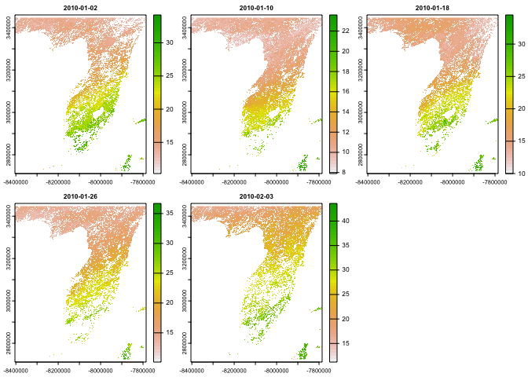

One of the biggest challenges with Earth System and spatial research is extracting data. These challenges include not only finding the source data but then downloading, managing, and extracting the partitions critical for a given task.
Services exist to make data more readily available over the web but introduce new challenges of identifying subsets, working across a wide array of standards (e.g. non-standards), all without alleviating the challenge of finding resources.
In light of this, opendap.catolog provides three primary services.
1. Generalized access of local and remote NetCDF data with dap() for space (XY) and Time (T) subsets
dap <- dap(URL = "https://cida.usgs.gov/thredds/dodsC/bcsd_obs",
AOI = AOI::aoi_get(state = "FL"),
startDate = "1995-01-01")
str(dap, max.level = 1)
#> List of 6
#> $ pr :Formal class 'SpatRaster' [package "terra"] with 1 slot
#> $ prate :Formal class 'SpatRaster' [package "terra"] with 1 slot
#> $ tas :Formal class 'SpatRaster' [package "terra"] with 1 slot
#> $ tasmax:Formal class 'SpatRaster' [package "terra"] with 1 slot
#> $ tasmin:Formal class 'SpatRaster' [package "terra"] with 1 slot
#> $ wind :Formal class 'SpatRaster' [package "terra"] with 1 slot
file <- '/Users/mjohnson/Downloads/NEXGDM_srad_2020_v100.nc'
utils:::format.object_size(file.size(file), "auto")
#> [1] "3.7 Gb"
dap = dap(URL = file,
AOI = AOI::aoi_get(state = "FL"),
startDate = "2020-01-01", endDate = "2020-01-05")
2. A catalog of 7294 web resources that can be accessed programatically (as of 02/2022)
dplyr::glimpse(opendap.catalog::params)
#> Rows: 7,294
#> Columns: 15
#> $ id <chr> "maca_day", "maca_day", "maca_day", "maca_day", "maca_day", …
#> $ grid.id <chr> "maca_day", "maca_day", "maca_day", "maca_day", "maca_day", …
#> $ URL <chr> "http://thredds.northwestknowledge.net:8080/thredds/dodsC/ag…
#> $ tiled <chr> "T", "T", "T", "T", "T", "T", "T", "T", "T", "T", "T", "T", …
#> $ variable <chr> "huss", "huss", "huss", "huss", "huss", "huss", "huss", "hus…
#> $ varname <chr> "specific_humidity", "specific_humidity", "specific_humidity…
#> $ long_name <chr> "Daily Mean Near-Surface Specific Humidity", "Daily Mean Nea…
#> $ units <chr> "kg kg-1", "kg kg-1", "kg kg-1", "kg kg-1", "kg kg-1", "kg k…
#> $ model <chr> "BNU-ESM", "CNRM-CM5", "CSIRO-Mk3-6-0", "bcc-csm1-1", "CanES…
#> $ ensemble <chr> "r1i1p1", "r1i1p1", "r1i1p1", "r1i1p1", "r1i1p1", "r1i1p1", …
#> $ scenario <chr> "historical", "historical", "historical", "historical", "his…
#> $ T_name <chr> "time", "time", "time", "time", "time", "time", "time", "tim…
#> $ duration <chr> "1950-01-01/2005-12-31", "1950-01-01/2005-12-31", "1950-01-0…
#> $ interval <chr> "1 days", "1 days", "1 days", "1 days", "1 days", "1 days", …
#> $ nT <int> 20454, 20454, 20454, 20454, 20454, 20454, 20454, 20454, 2045…For use in other applications (e.g. stars proxy, geoknife, or python) this catalog is available as a JSON artifact here.
read_json('https://mikejohnson51.github.io/opendap.catalog/cat_params.json',
simplifyVector = TRUE)(3) The ability to pass catalog elements to the generalized toolsets to aid data discovery and complicated edge cases:
# Find MODIS PET in Florida for January 2010
(
dap = dap(
catolog = dplyr::filter(params,
id == 'MOD16A2.006',
varname == 'PET_500m'),
AOI = AOI::aoi_get(state = "FL"),
startDate = "2010-01-01",
endDate = "2010-01-31"
)
)
#> class : SpatRaster
#> dimensions : 1561, 1336, 5 (nrow, ncol, nlyr)
#> resolution : 463.3127, 463.3127 (x, y)
#> extent : -8404261, -7785275, 2724047, 3447278 (xmin, xmax, ymin, ymax)
#> coord. ref. : +proj=sinu +lon_0=0 +x_0=0 +y_0=0 +R=6371007.181 +units=m +no_defs
#> source : memory
#> names : 2010-01-02, 2010-01-10, 2010-01-18, 2010-01-26, 2010-02-03
#> min values : 10.300000, 7.200000, 9.900001, 9.900001, 11.100000
#> max values : 34.4, 24.1, 35.9, 37.5, 44.4